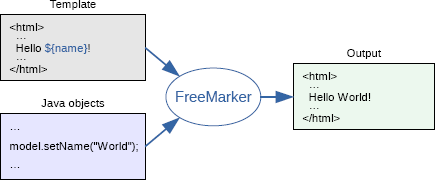

FreeMarker is a template engine: a generic tool to generate text output (HTML web pages, e-mails, configuration files, source code, etc.) based on templates and changing data. It's not an application for end-users in itself, but a Java library, a component that programmers can embed into their products.
Templates are written in the FreeMarker Template Language (FTL). It's a simple, specialized language, not a full-blown programming language like PHP. You are meant to prepare the data to display in a real programming language, like issue database queries and do business calculations, and then the template displays that already prepared data. In the template you are focusing on how to present the data, and outside the template you are focusing on what data to present.

This approach is often referred to as the MVC (Model View Controller) pattern, and is particularly popular for dynamic web pages. It helps in separating web page designers (HTML authors) from developers (Java programmers usually). Designers won't face complicated logic in templates, and can change the appearance of a page without programmers having to change or recompile code.
While FreeMarker was originally created for generating HTML pages in MVC web application frameworks, it isn't bound to servlets or HTML or anything web-related. It's used in non-web application environments as well.
FreeMarker is Free, released under the Apache License, Version 2.0.